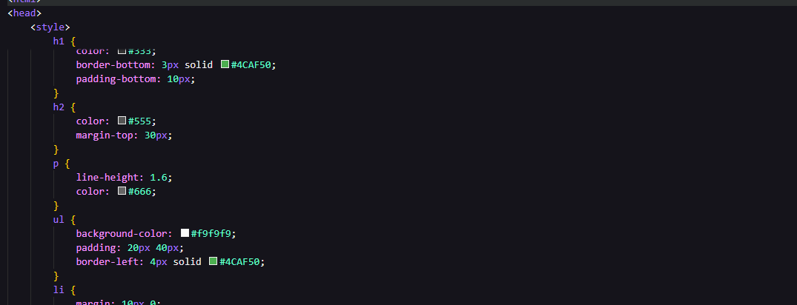

Bienvenido al Servidor Web Pro
Este es un servidor HTTP personalizado desarrollado en Java que soporta multiples solicitudes seguidas.
Estado del servidor: Activo y funcionando correctamente en puerto 35000
Caracteristicas del Servidor
- Soporte para multiples peticiones HTTP seguidas
- Servir archivos HTML estaticos
- Servir imagenes (JPG, PNG, GIF)
- Servir archivos CSS y JavaScript
- Manejo de errores 404 personalizados
- Content-Type apropiado para cada tipo de archivo
Ejemplo de Imagen
Si tienes una imagen llamada test.jpg en la carpeta www/, se mostrara aqui:

Imagen no encontrada. Agrega un archivo test.jpg en la carpeta www/